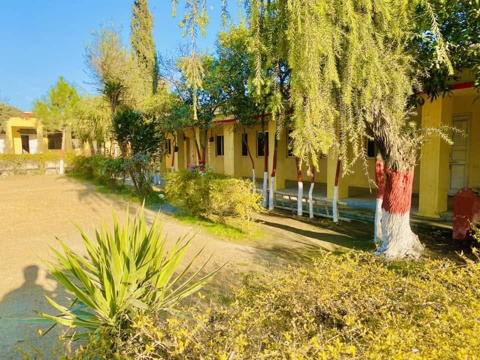

Overview
Education is the backbone of Boobak village. The area has produced many professionals, including Assistant Commissioners, teachers, engineers, and Islamic scholars. Schools in Boobak play a key role in shaping the future of the youth.
Government Schools & College

- Government High

- Government High School for Boys
- Government High School for Girls
- Government College for Boys
Primary & Community Schools
- Primary School for Boys
- Primary School for Girls (1)
- Primary School for Girls (2)
- Community / Basic Education Centers for small children
Academic Importance
These institutions have contributed significantly to literacy improvement in the region. Many students from Boobak have reached high positions in government services, including Assistant Commissioner level officers and other administrative posts.